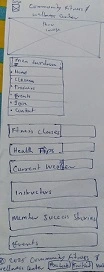
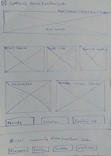

Site Name
Community Fitness and Wellness Center
This name was selected because it clearly communicates the site's purpose—promoting community health and wellness through fitness programs and educational resources.
Optional domain availability: communityfitcenter.org
Site Purpose
The website will serve as an online hub for a local fitness and wellness center, providing information on:
- Fitness class offerings and schedules
- Personal training and health coaching
- Wellness workshops and events
- Membership details and benefits
- Instructor bios and success stories
- Health tips via a blog
- Registration and contact forms
Scenarios
- Where can I sign up for yoga or HIIT classes near me?
- How do I contact a personal trainer at the wellness center?
Color Schema
- Deep purple (rgb(47, 2, 58)) — Used for headers, navigation, and key accents
- Light Gray (#f8f9fa) — Background color for body and sections
- Soft Green (#58b368) — Call-to-action buttons and success messages
Typography
- Roboto — Used for all body and paragraph text for readability
- Merriweather — Used for headings to create a contrast and bold look
Wireframes
Mobile View

Desktop View

Note: These wireframes show layout relationships only and are subject to design updates.